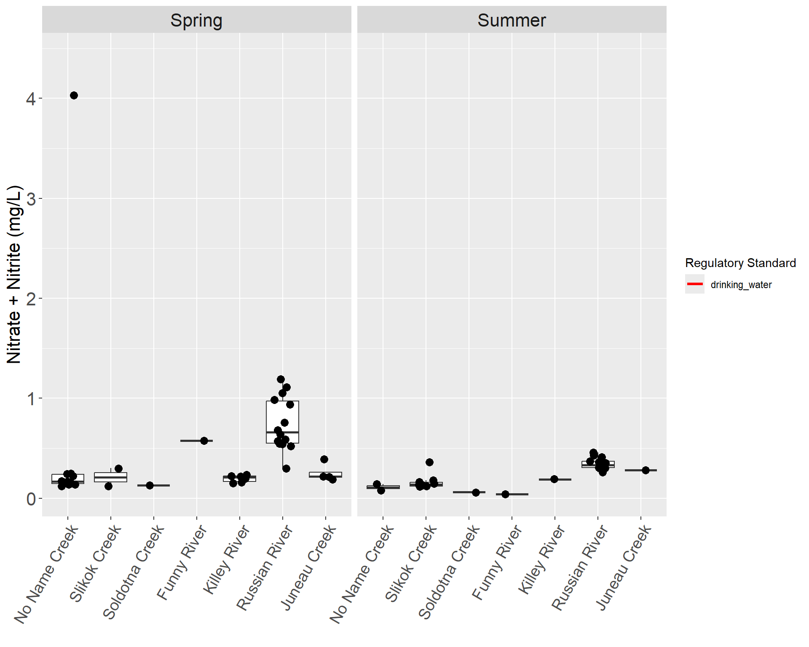

Source Code
# Nitrate
---
execute:
echo: false
date: "`r Sys.Date()`"
format:
html:
code-fold: true
code-tools: true
code-summary: "Show the code"
---
```{r echo = F, warning=FALSE, message=FALSE,fig.height=10}
# set parameter
parameter <- "Nitrate"
# source static regulatory criteria boxplot function
source("functions/static_boxplot_function.R")
make_boxplot(param = parameter)
# source calculated regulatory criteria plot(s) function
# source table download function
source("functions/table_download.R")
download_tbl(param = parameter)
```